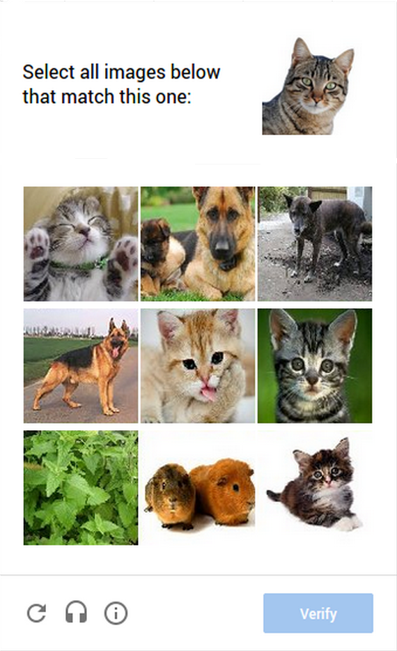
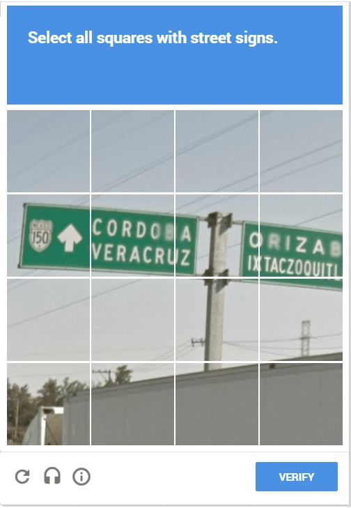

Completely Automated Public Turing test to tell Computers and Humans Apart. Son pruebas desafío-respuesta controladas por máquinas que son utilizadas para determinar cuándo el usuario es un humano o un programa automático. Usada por muchas aplicaciones Web para asegurarse que la respuesta no es generada de forma automática por una computadora.
UD 3: Detección y corrección de vulnerabilidades en aplicaciones web
8.3. - CAPTCHAs
Utilidad de los CAPTCHAs
Aunque CAPTCHA no es un control de autenticación, su uso resulta muy útil para evitar o mitigar:
Ataques de enumeración
Los ataques de enumeración permiten a un atacante comprobar si existe un nombre de usuario está dado de alta en la base de datos. Esto no permitirá al ciberdelincuente acceder de forma inmediata, pero sí le proporciona la información para preparar un ataque posterior. Por ejemplo, mediante un ataque de fuerza bruta, donde no será necesario buscar las parejas formadas por nombres de usuario y contraseñas, sino que simplemente bastará encontrar la contraseña emparejada con el nombre de usuario previamente verificado. El uso de CAPTCHAs puede ser útil frente este tipo de ataques al dificultar y retrasar el proceso de obtención de nombres de usuario válidos, números telefónicos o cualquier otra información que pueda resultar útil a un atacante.
Envio automático de peticiones GET/POST
Los CAPTCHAs son muy eficaces para evitar o retrasar el envío automático de muchas peticiones GET/POST. Esto es especialmente útil cuando se desea evitar la inundación de mensajes SMS, MMS, o e-mails de forma automatizada. Los hackers malintencionados pueden crear "bots" que introducen direcciones de correo electrónico,números de teléfono móvil de forma automatizada en formularios en línea. Eso puede desencadenar el bloqueo, la inhabilitación de los propios formularios de registro o la inundación de los de los servidores de correo o mensajería. Agregar CAPTCHA a todos los formularios. Esto resuelve el problema. A los bots les resulta muy complicado completar una prueba de CAPTCHA con lo que se evita la inundación mediante el envío de muchas peticiones GET/POST en poco tiempo.
Creación o uso de cuentas para la difusión de SPAM
La creación o uso automatizado de cuentas de correo web, es una práctica habitual de los piratas informáticos. Generalmente las cuentas de correo web son utilizadas para difundir desde ellos mensajes de correo basura o SPAM con los que inundar la red. Esta práctica puede causar un enorme perjuicio al agotar el espacio libre disponible en los servidores de correo. Los robots pueden utilizarse tanto para detectar y secuestrar cuentas legales que han sido dado de alta previamente por usuarios legítimos, como para crear nuevas cuentas haciéndose pasar por usuarios ficticios que se registran en los en los formularios de alta de los servidores de webmail. El empleo de CAPTCHAs supone un freno, que dificulta la actuación de los programas automáticos especializados en la localización o registro de cuentas de correo electrónico.
Generación publicaciones automáticas en blogs, foros o wikis
La publicación no autorizada de forma automática en blogs, foros o wikis. En muchas ocasiones esta situación es resultado de campañas de acoso, intimidación, vandalismo o incluso promoción agresiva de productos comerciales.
Registros masivos en eventos gratuitos o compra indiscriminada de artículos
Los CAPTCHAs pueden utilizarse para evitar inscripciones falsas en eventos gratuitos. También pueden ser empleados por los sistemas de venta para frenar la especulación, evitando la utilización de bots en procesos de compra masiva, que provocan la escasez o agotamiento de productos altamente demandados (por ejemplo, entradas para eventos deportivos, actuaciones, conciertos, tarjetas gráficas, ediciones limitadas, y otros productos exclusivos) que posteriormente son revendidos a precios desorbitados.
Falsificación de consultas, votaciones o encuestas electrónicas
Los CAPTCHAs pueden ser útiles para mantener la exactitud en los procesos de consulta a través de Internet. Asegurando que en los procesos de consulta únicamente participen humanos. Dificultando la emisión de votos múltiples de forma automatizada.
Tipos de CAPTCHAs
Existen diferentes tipos de CAPTCHA, a grandes rasgos es posible agruparlos basados en texto, gráficos, auditivos, matemáticos, lógicos y lúdicos. A continuación se presentan las características de los tipos de CAPTCHA más comunes:
CAPTCHA basado en texto
Consiste en que el usuario introduzca correctamente un conjunto de caracteres, palabras o combinaciones alfanuméricas que se muestran en una imagen distorsionada que aparece en pantalla. El usuario debe descifrar la palabra o frase que se muestra en pantalla y escribirla con el teclado en el campo de respuesta.
Para la creación de CAPTCHAs de texto habitualmente se emplean las siguientes técnicas:
- Gimpy: se elige un número arbitrario de palabras de un diccionario con una gran cantidad de palabras; a continuación se proporcionan esas palabras de forma distorsionada.
- EZ-Gimpy: es una variación de Gimpy que utiliza sólo una palabra.
- Gimpy-r: se escogen letras al azar, se distorsionan y añade ruido de fondo a los caracteres.
- Simard’s HIP: se seleccionan letras y números al azar; para distorsionar los caracteres se utilizan arcos y colores.
CAPTCHA basado en imágenes
Los captchas gráficos son la alternativa ideal a los captchas de texto. En vez de utilizar una secuencia de caracteres alfanuméricos alterada, que puede ser difícilmente reconocible por algunos usuarios, los captchas visuales se apoyan en elementos gráficos que pueden ser fácilmente reconocible a simple vista.
Para la mayoría de usuarios resolver este tipo de retos no entraña una dificultad excesiva. Sin embargo, la capacidad de los programas informáticos actuales para hacer frente a este tipo de retos es muy limitada. Por lo que los captchas gráficos son considerados actualmente mucho más eficaces que basados en texto.
Suele ser habitual pedir al usuario que reconozca determinadas imágenes cotidianas:
 
CAPTCHA de audio
Para garantizar la accesibilidad de aquellos usuarios con discapacidad visual se idearon los CAPTCHAs de audio. Estos se utilizan a menudo en combinación con CAPTCHAs basados en texto o en imágenes. Contienen una grabación sonora con la secuencia alfanumérica que el usuario debe introducir a continuación, generalmente acompañada de un ruido de fondo para dificultar su reconocimiento por parte de los bots.

CAPTCHA matemáticos o lógicos
Uno de los tipos de CAPTCHAs más populares son aquellos que solicitan la resolución de problemas matemáticos sencillos, como por ejemplo:”3+2” o “15-3”.
Otra variantes son las que plantean una cuestión lógica o una pregunta de cultura general. Algunas preguntas de este tipo son:
- ¿De qué color es el caballo blanco de Santiago?
- ¿Dónde se encuentra la Estatua de la Libertad?
CAPTCHA lúdico
Con el objetivo de evitar que los CAPTCHAs resulten complejos, crípticos o difíciles de entender, la tendencia actual es ofrecer a los usuarios juegos sencillos que se puedan integrar en los retos, conocidos como SweetCaptcha o FunCaptcha. Este tipo de pruebas plantea tareas fáciles de realizar para un humano, pero extremadamente complicadas para un robot; como por ejemplo, mover una barra de desplazamiento o arrastrar un elemento de la pantalla hasta una posición concreta.
Honeypot
Un honeypot, sistema trampa o señuelo tiene como objetivo engañar a los robots para detectar su presencia para impedir su actuación. Habitualmente, suelen ocultarse múltiples campos invisibles en la pantalla. Campos que los bots detectan y rellenan inmediatamente, confirmando de este modo que quien está accediendo a la web no es un humano, sino una aplicación automatizada; consecuentemente, se bloquea su acceso a la web.
Inicio de sesión en redes sociales
Actualmente, muchos sitios web para descartar la presencia de robots, solicitan a los usuarios que inicien sesión utilizando su cuenta de redes sociales: como: Google, Facebook, LinkedIn o Twitter. De este modo, el usuario no necesita introducir ninguna información adicional.
Google reCAPTCHA
Google reCAPTCHA fue introducido en el año 2014. Habitualmente se solicita al usuario que haga clic en una casilla rotulada con “No soy un robot”. El CAPTCHA rastrea el movimiento del ratón, el clic y las cookies del usuario, además de otros parámetros, y determina si el usuario es un robot o no. En caso de que el sistema no fuese capaz de diferenciar si se trata de un humano o un robot, mostrará una segunda prueba alternativa.

reCAPTCHA invisible
Es una mejora del sistema de Google reCAPTCHA anterior. Su ventaja es que no requiere de la intervención directa del usuario. Simplemente se monitorean los patrones de navegación, y con ello consigue diferenciar a un humano de un bot sin que el usuario tenga que interactuar.
Debes conocer
Descripción textual alternativa
Video educativo sobre los orígenes de los CAPTCHAs y su uso en la web.
¿Cómo instalar un CAPTCHA en un formulario?
Para instalar ReCAPTCHA en un formulario de contacto o en los comentarios de tu blog personal, debes empezar por conseguir las claves de Google reCAPTCHA.
Dependiendo si la el framework utilizado es WordPress, PrestaShop o si tienes una web diseñada a medida, deberás seguir diferentes pasos:
Autoevaluación
Para saber más
Los CAPTCHAS que normalmente se emplean presentan problemas de accesibilidad para algunos grupos de usuarios. En concreto, los CAPTCHA bloquean el acceso a muchos usuarios que padecen algún tipo de discapacidad.
Descripción textual alternativa
Vídeos educativos donde se presentan los problemas de accesibilidad asociados a los CAPTCHAS.